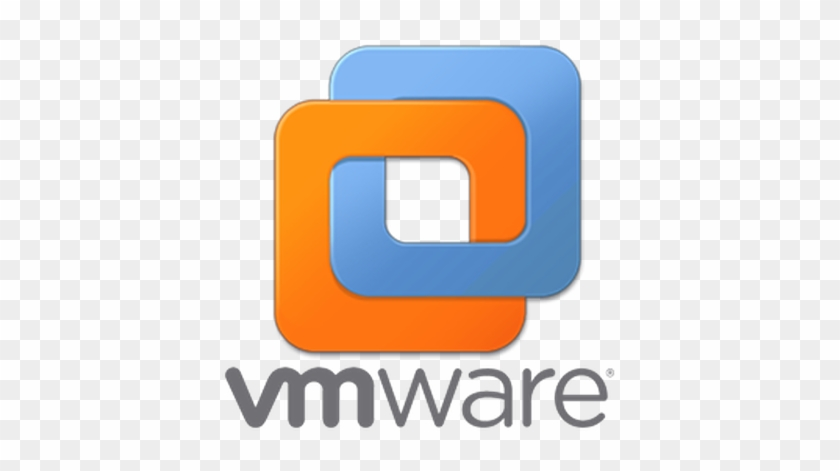

🖥️ Windows Museum
Toutes les versions de Windows au même endroit
Windows Modernes
 macOS
macOS

Windows 11 x64
Architecture 64 bits
Windows 10 x64
Architecture 64 bits
Windows 10 x32
Architecture 32 bits
Windows 8.1 x64
Architecture 64 bits
Windows 8.1 x32
Architecture 32 bits
Windows 8 x64
Architecture 64 bits
Windows 8 x32
Architecture 32 bitsWindows Classiques

Windows 7 x64
Architecture 64 bits
Windows 7 x32
Architecture 32 bits
Windows Vista x64
Architecture 64 bits
Windows Vista x32
Architecture 32 bits
Windows XP x64
Architecture 64 bits
Windows XP x32
Architecture 32 bitsWindows Rétro

Windows ME x32
Millennium Edition
Windows 2000 x32
Noyau NT 5.0
Windows 98 SE x32
Second Edition
Windows 95 x32
Version originale 1995🧰 Outil Indispensable

VMware Workstation
Machine Virtuelle💻 Guide des Émulateurs et Machines Virtuelles
Voici les logiciels recommandés pour tester les versions de Windows selon leur génération :
| Génération Windows | Versions compatibles | Logiciel recommandé |
|---|---|---|
| Windows Modernes | Windows 11, 10 | VirtualBox / Hyper-V / VMware |
| Windows Classiques | Windows 8.1, 7, Vista, XP | VirtualBox / VMware Workstation |
| Windows Rétro (9x) | Windows Me, 98, 95 | PCem / 86Box / VMware (avec patchs) |
| Windows MS-DOS | Windows 3.11, 3.1, 1.0 | DOSBox-X / PCem |